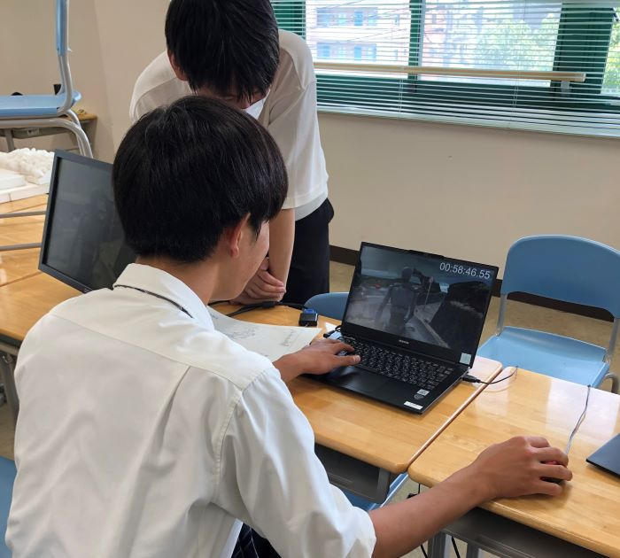
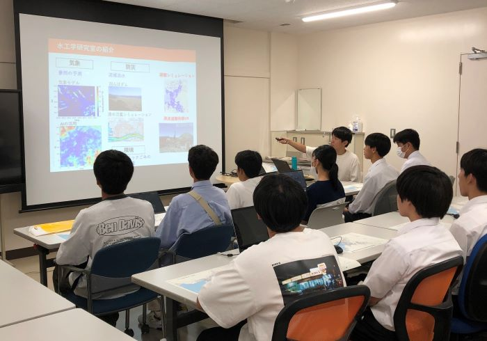
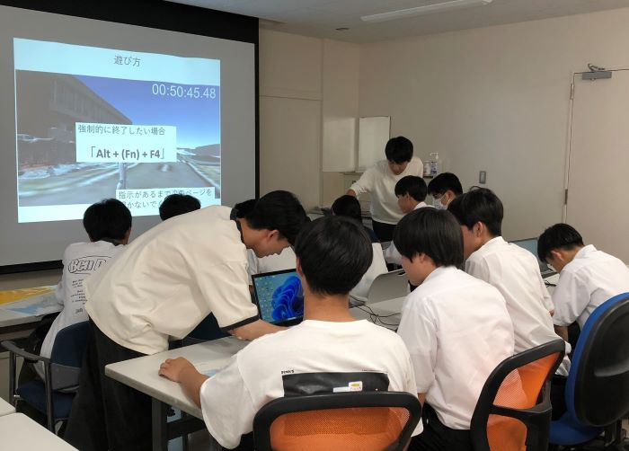

mizukan
イベント
オープンキャンパス
8月9日(水),8月10日(木)に愛媛大学のオープンキャンパスが開催され,
当研究室も,9日（水）に研究室紹介の展示と研究室見学会を行いました.

研究室紹介の展示では、当研究室の簡単な説明をした後、
昨年開発された津波からの避難を体験できるVRを体験してもらいました!


研究室見学会では研究内容を説明し,防災関連の研究について
知ってもらった上で,同じくVRを体験してもらいました！
VRはゲーム感覚で操作できるので,楽しみながら
研究室について知ってもらうことができました！(*^^)v
文責 後藤